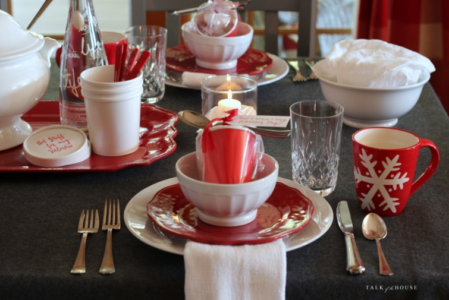
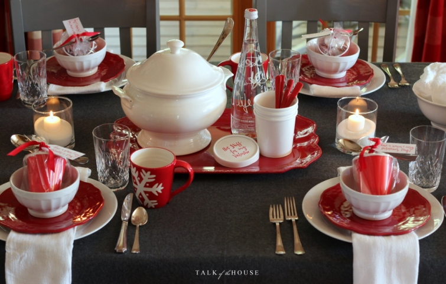
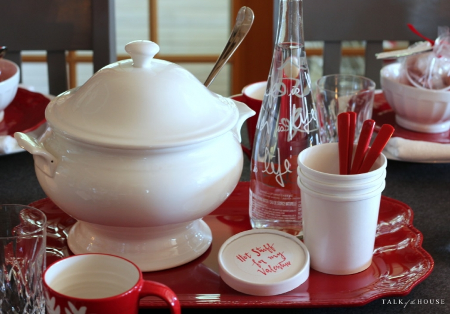

.png)
.PNG)
.PNG)
.PNG)
.PNG)
.PNG)
.JPG)
.JPG)
.PNG)
.PNG)


I am not supposed to be writing this post today. ¬†I am supposed to be cleaning the house. ¬†It is the top thing on my to-do list for this Thursday. ¬†But I thought… If I don’t get out my Valentine’s things to you today, it will be St. Patrick’s Day before you see it! ¬†So I lit the candles just for you, and viola! ¬†Here’s a Valentine’s post. üôÇ
Regardless of what that old groundhog says, I am still holding onto winter and wishing for snow.
(You folks up north, please don’t hate me. ¬†I know you’ve had enough. üôÅ )
My husband and I are celebrating Valentine’s Day with a dinner at a very nice restaurant, so I will not be making a hugely romantic meal for the occasion. (Not sure I even know how to make one of those!)¬† But I am preparing a casual lunch with chili, cornbread, Caesar salad, and warm chocolate pudding with whipped cream in mason jars. ¬†The leftover chili will go home with our guests in the small white containers labeled Hot Stuff.
(Perfect for Valentine’s Day, right? üôÇ )

The other take home gift is a paper cup with hot cocoa, marshmallows, and a disposable spoon. ¬†I know…it is something I have done a variation on several times before. ¬†It just works too well with our current weather, the holiday, and the decorating I have done for this month.

One other Valentine’s gift idea you might like is another variation – this time on the little bag of pretzels from earlier this year. ¬†Do you remember this?
With an easy change of tags, it works for Valentine’s Day too. üôÇ
Yes, I know it is corny, but most Valentine’s Day messages are as well. üôÇ
The rest of our decorating is just like you have already seen it in this post, this post, and this one¬†this year.¬† So I thought it would be helpful to do a round up of all the other ideas for Valentine’s Day that have been on the blog in previous years. ¬†I am going to start with a few gift ideas….
Cracker Jacks and Coca Colas for teachers
Treat Bags with Little Debbie Snacks
A jar of Hershey Hugs and Kisses for our daughter
Smarties for math students
Stationery and pens for co-workers
Rulers with You Measure Up message
Ice Cream for co-workers
Pies for your sweetie-pie üôÇ
Another version of the cocoa with marshmallows gift
And now for some Valentine decorating. üôÇ
Love Makes the World Go Round globe
A red mailbox in our daughter’s room
Books and bookmarks in our bedroom
DIY art easily made from giftbags
Table Topics and wrapped gifts for a Valentine’s centerpiece
A vignette with a vintage typewriter for love notes üôÇ
The table setting for a Valentine’s Day breakfast
(along with a gift idea I forgot to mention above.)
Love potion chemistry on the desk in the boys’ bedroom
A couple of chalkboards from our school themed Valentine’s Day
And finally, a Valentine’s table setting that celebrates a vintage school theme
And that brings us to the end of the round up of Valentine’s posts.
Before I go, I want to let you know the winner of the Spartina gift card giveaway. ¬†Thank you to all of you for such sweet comments! ¬†I read and loved each and every one. üôÇ
The winner was lucky number….
Yes really!  Thirteen was lucky!
And it belonged to this comment:
Congratulations Kaye Ann!
I have already sent her an email, and her prizes are on the way. üôÇ
I hope you have enjoyed the decorating and gift ideas here for Valentine’s Day today. It is always such a fun little holiday to me…not too serious, often filled with chocolate, and all dressed in red. ¬†What could be better than that? üôÇ
 And now, I must get to cleaning this house!
Until next time…


.PNG)
Thank you for putting all of the Valentine ideas into one post. Very clever! Now I can just pin them all onto a Pinterest board. My favorite things are your tags and ideas for favors. When I get my Valentine cookies from Cynthia, I will send you a photo. Maybe you will be showing us your Valentine cookies next year. I hope your week was fun and you enjoy your Valentine dinner. My husband and I were going to go to Atlanta for the weekend but decided to wait for a warmer weekend which is fine with me. (I would rather be angry than cold!) My husband is going to cook for me. Congratulations to Kaye Ann! Happy Birthday to Louvina! and, Happy Valentine’s Day to you!
Love all your red and white Valentine’s Decor. üôÇ Your table settings are always my favorite. Your lucky guests! I’m not a big fan, but I do have a little red and even a little pink (my mother-in-laws’s vintage mixer and some <3 cookies cutters) spread around a few spots. üôÇ Hope you have a wonderful dinner with your guests and your romantic one with your husband. üòâ Seems like I remember his birthday might be on Valentine's or close maybe. üôÇ Oh, and I loved your past two house posts!!
Happy Valentine’s Day, Kelly!♥ Love all your ideas and creativity on this most wonderful day of the year. We are freezing here but toasty warm and all done up in red, white and homemade cupcakes for us and our neighbors. Enjoy! Love reading your blog üôÇ
Great Post. I love all the cute ideas.
Thanks for all the great ideas and I really like your soup tureen! It’s just the perfect size for chilli. Happy Valentine’s Day to you Kelly!
I love all of the Valentine ideas and inspiration, especially your table!! Thanks for sharing… I’ve pinned several things and am looking forward to utilizing your great ideas. Happy Friday!
I received my package today and I’ve got a cup of coffee this morning which will set my mood to sit a bit and look through this great magazine Life Beautiful. I thank you Kelly! You’re a doll.
Hi Kelly! Such great ideas again! Everything looks so beautiful! I love the idea of the little Chili cup for everyone. I was sure that you would have tons of amazing ideas ideas for the reddest celebration of the year! üòâ
I wish you and your loved ones a very Happy Valentine’s Day!
Claire
nice table setting and Valentine’s decor. The red really cheers the house up.
Loved the round up of all your great Valentine’s decorations!!
So sweet of you to combine all the posts and ideas together. Such great ideas! I still love that red mailbox. Every tablescape looks very inviting. Of course, I have never seen one that you did that wasn’t! You also do the smartest gift bags. I
especially love the tags. Happy Valentine’s Day! You must share your “date meal” with us. You know how we love to hear about the places you go! Have a fun weekend!üíå
Sherry
Another wonderful and beautiful blog! I simply treasure our “visits” and always love seeing what you’ve come up with for all the special days of our lives. Your Valentine ideas are spectacular! Thanks for sharing!
So many fun ideas, Kelly. The love potion is especially cute! Happy Valentine’s Day!
I love your blog! I get so many ideas from you. Where do you find all your cute dishes, napkins, etc.? Do you just keep an eye out for things wherever you go or do you mostly have a few favorite places to shop for such things? I have a few favorite places I like to shop for such things but my husband keeps reminding me we are now on a “retirement budget”. I am not a fan of the “retirement budget”.
I want to be your friend and eat dinner with you! What a treat that would be. I know everyone loves to be invited to your house. I enjoyed all your Valentine ideas. I have spent today making little treats for my 6 grandchildren. Valentine’s day has a way of sneaking up on me.
Congrats to Kaye Ann!! Great post — my favorite color has always been red and your post has really sparked some creativity üôÇ
LOVEly post! üôÇ Enjoyed it so much and knowing you were putting your readers ahead of your “to do” list made it even sweeter! A gift to all of us!! It is nice to look back on the past Valentine Posts and have them all in one place. A good review and for the newbees a look at what they have been missing. I made the picture frames from gift bags– so easy– yet so pretty, too! I want to do this craft for other holidays also. Wish we could come help you clean to make up for the time you spent doing your post— but then it would turn into a party and you still wouldn’t have it done!!;) Just a few more hours before I turn the Big 70 tomorrow! So glad to still have good health and able to enjoy the things I like to do! Our God is so good and his grace is new every day!! Love you and your family and wishing you a wonderful Valentine’s Day!!
I loved your Valentine’s Day post. You have so many wonderful and doable ideas.
Thanks so much for sharing with us. I always feel as if I have stepped into a friend’s house for a cup of coffee when I read your blog. Happy Valentine’s Day to and those you love. Becky in sunny Oklahoma
I’ve always loved your red mailbox!.Happy Valentine’s Day, Kelly!
Kelly,
There are so many great ideas. We’re going to dinner at a friend’s house so I may package something up for a little treat for the hostess.
Have a wonderful Valentine’s Day.
xo,
Karen
I always leave here inspired! All of your ideas of so sweet! You have such a knack for putting things together beautifully. I have one question…where do you get the paper cups with lids and the pretty silver plastic spoons? I love this idea! Have a blessed Friday and weekend!
——————————————————————–
Vicky the cups originally came from Target. They used to come in solid white, and I bought a lot of them a while back. They do not have them in plain white any more. But Amazon carries some here: http://www.amazon.com/Pretty-Sips-Paper-Sleeves-HOT16LS/dp/B00EJ3B0J4/ref=sr_1_2?s=hpc&ie=UTF8&qid=1456283782&sr=1-2&keywords=disposable+coffee+cups+with+lids+white
The plastic spoons are carried in our local grocery store.
Kelly
Hi Kelly,
It is all very inspirational. I love your globe “Love makes the world go round”-it shows Australia! Happy Valentines Day on Sunday.
Your table looks great…gotta love that red! üòâ
I’m so glad you like Valentine’s Day too! It’s such a cheerful day full of pretty things and lots of red! I loved all you decorations and ideas for gifts. Have a great Valentine’s Day, Kelly!
I always look forward to your blog Kelly and this was no exception.. Loved all the Valentine ideas and all the red! Congratulations to Kaye Ann she’s a lucky girl and you are very sweet to do a giveaway! Happy Valentine’s Day!!